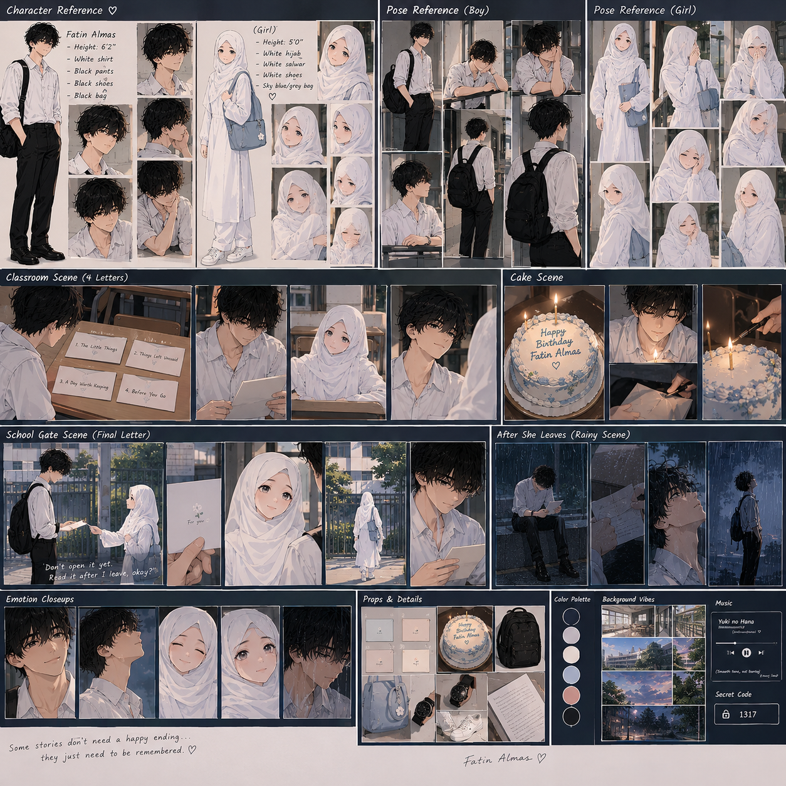
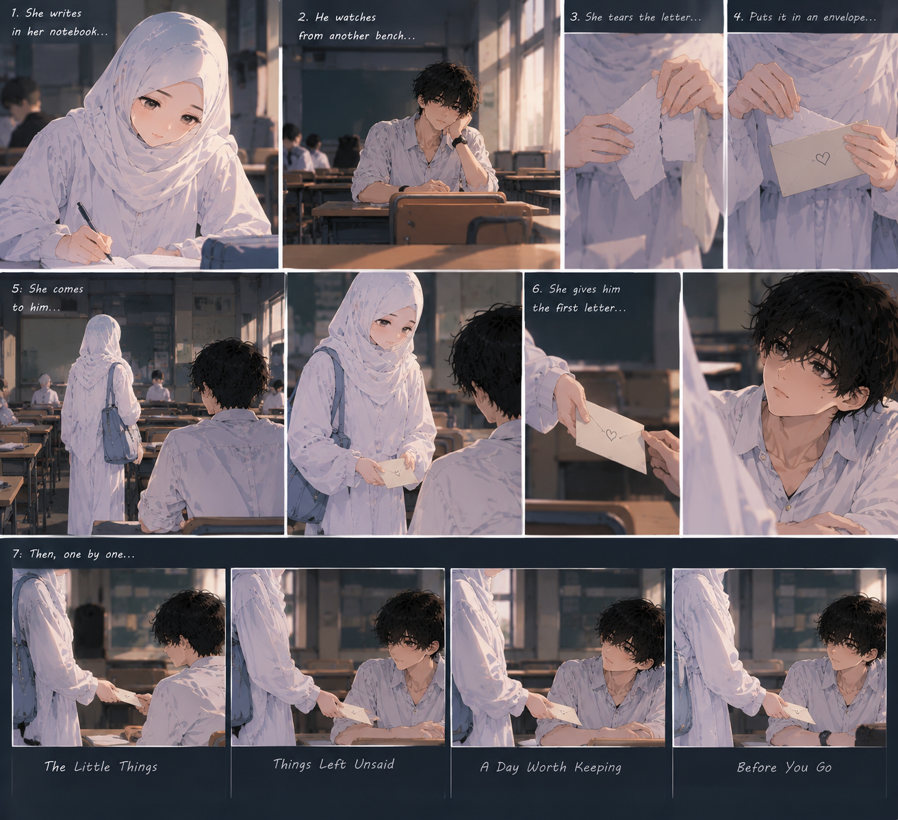
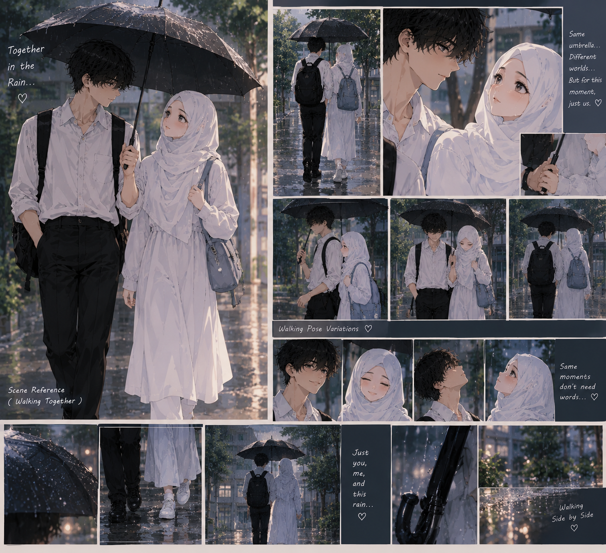

A little surprise, made with care
For Fatin Almas
Some moments don't need to last forever to mean something forever. ♡
01 · Something to tell you

Image not loading? Check that the filename in GitHub matches exactly.')">A quiet moment at school
♡ A message sent on Messenger ♡
A Little Something for You ♡ / Made with love, just for you.
02 · The little secret
Girl: Remember the code we once created just for us? Give me that code.
You remembered the code… didn’t you? Then, I guess it’s time for the real surprise.
Happy Birthday, Fatin… ♡
03 · Make a wish
A little birthday cake, a sunny classroom, and one wish just for you.
Girl: Make a wish before we blow them out.
Fatin: Okay. Ready?
May the year ahead bring you gentle days and good memories.
04 · A piece of cake
They sit on two separate benches, sharing a small, happy moment.
05 · The letters

She takes a notebook and pen from her bag and begins to write. Fatin watches quietly from a separate bench. She folds four pages, places them in separate envelopes, then sits beside him and hands them over one by one.
06 · One umbrella

They walk together toward the school gate under one black umbrella. Gentle rain falls, and she looks a little shy.
07 · Before you go
Don't open it yet. Read it after I leave, okay?
At the gate, she hands him one last letter. She hugs him, then steps back.
She walks away. Fatin watches her leave, then opens the final letter. He looks up at the sky, closes his umbrella, and lets the rain fall around him. The scene slowly fades to black.